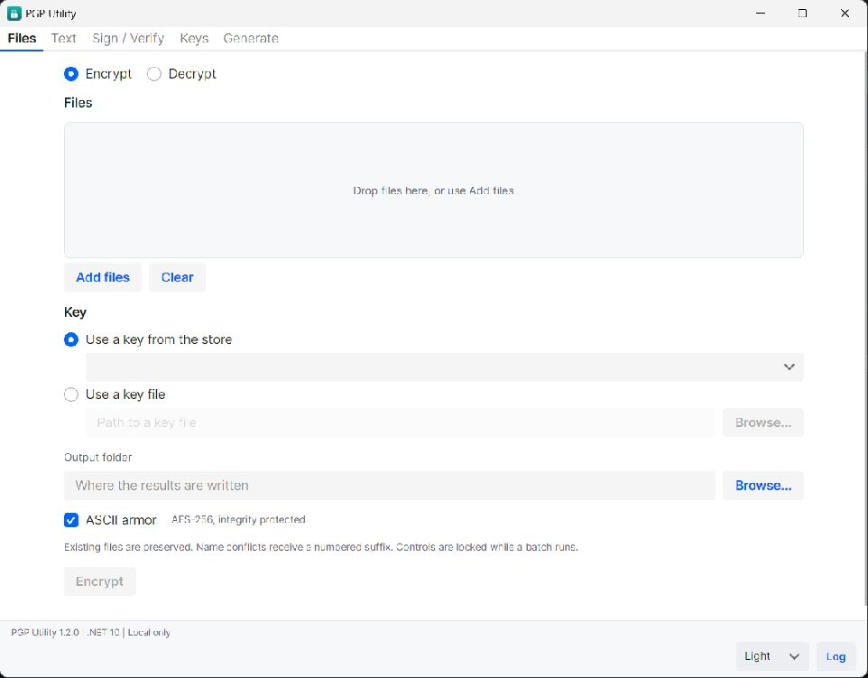
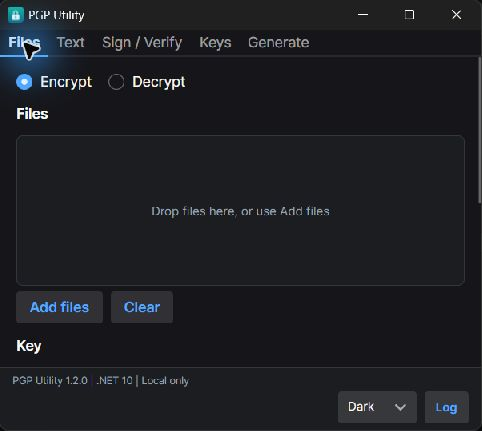
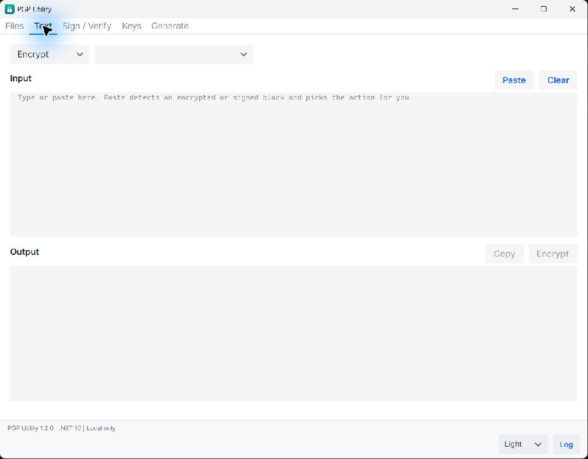
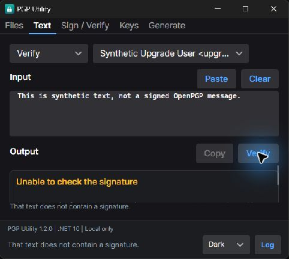
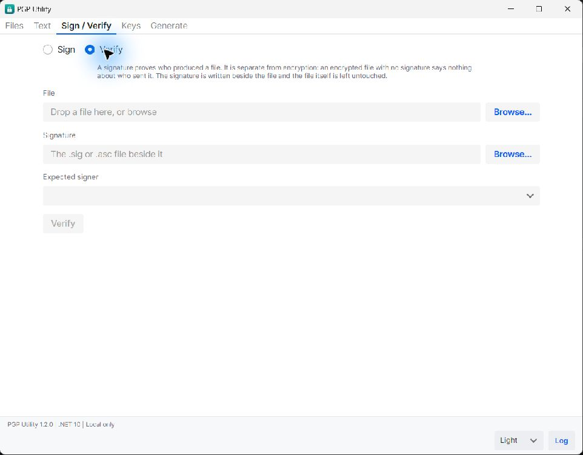
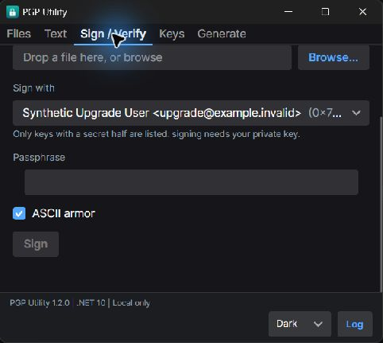
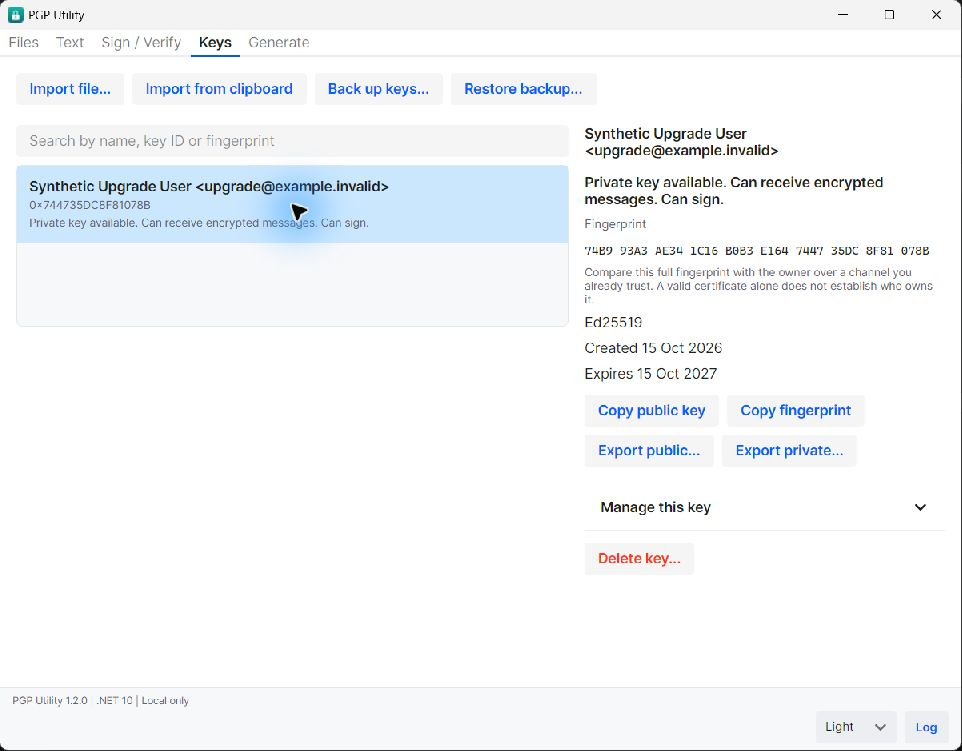
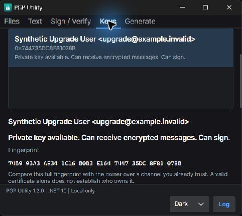
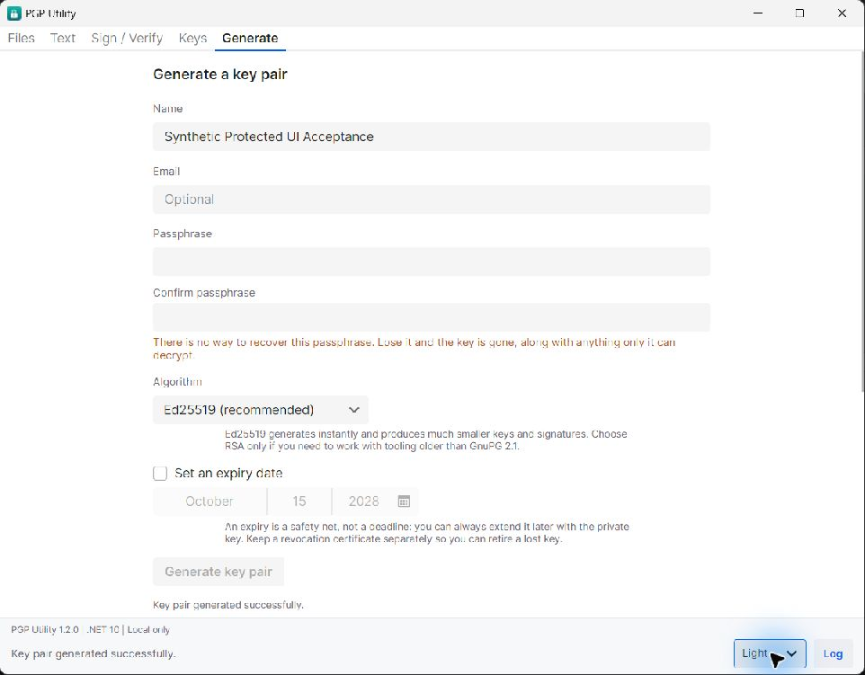
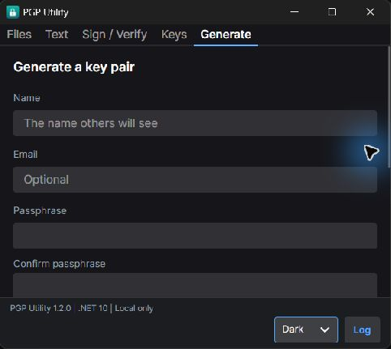

PGP Utility 1.2.0: current screens
This record replaces the proposal with verified views of the implemented five tabs. The app stays free, local only and independent of accounts or keyservers. All screenshots use synthetic identities and messages.
Each pair shows the normal Light layout and a minimum-size Dark layout. Content scrolls where needed at the minimum height. These are captured application states, not simulated controls.
Files
Encrypt or decrypt a batch using a stored key or key file. Choose an output folder and optional ASCII armor. Existing files are preserved with numbered conflict names. Batch controls lock while work runs; cancellation and the final counts describe what completed.


Text
Choose the action and key, then enter or paste a message. Editing the input clears output, verdict and footer status. Copy is disabled when output is empty. A verification verdict replaces the output editor and scrolls within that region at short heights.


Verdict states
Good, mismatch and unable-to-check states use distinct headings. A good signature includes the validated primary fingerprint and a reminder to compare it with the owner over a trusted channel. Lifecycle caveats appear immediately below the heading. A matching signature alone does not establish who owns the key.
Sign / Verify
Detached signatures keep the original file intact. Verify selects the file, signature and expected signer. Sign selects a private key and passphrase. Relevant input changes clear the old verdict. A verdict describes the bytes read during the check; external edits require another check.


Keys
The normal layout puts selected-key details beside the list. The minimum layout stacks them below it. Show the full fingerprint, capabilities and lifecycle dates. Keep fingerprint comparison guidance beside the identity and wrap key actions within the available width.


Backup, recovery and lifecycle states
Backup and Restore apply to the whole store and open explicit disclosure panels with cancellation. Backup ZIPs have no additional archive password. Restore merges identities, retains known revocations and current private-key protection, and explains using an empty store when an older backup passphrase is needed.
Manage this key expands expiry renewal, passphrase change, certificate export and certificate application. The forms identify the selected fingerprint. Passphrase changes warn that older backups retain their previous protection. Certificate export warns that anyone holding it can retire the key. Applying one explains permanent retirement and continued historical decryption.
Delete opens a separate confirmation showing the full fingerprint, loss-of-access warning, Back up first, Delete this fingerprint and Keep key. Cancelling keeps the key. Deletion removes the local copy and does not revoke copies held by others.
Generate
Ed25519 is the default, with RSA available for compatibility. Collect and confirm a passphrase, with an optional expiry. Clear both passphrase fields after generation. Generated private material and the revocation certificate stay collapsed until revealed, with warnings before their copy controls. Save using fingerprint-based filenames and retain the generated identity for export.

